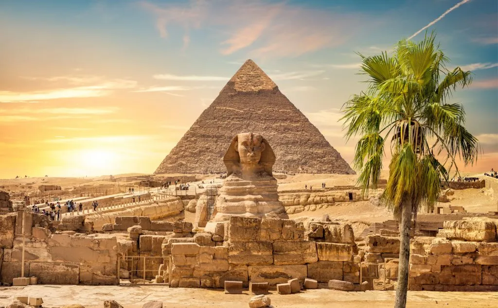

my favourite places to see in egypt
the pyramids
A pyramid (from Ancient Greek πυραμίς (puramís) 'pyramid')[1][2] is a structure whose visible surfaces are triangular in broad outline and converge toward the top, making the appearance roughly a pyramid in the geometric sense. The base of a pyramid can be of any polygon shape, such as triangular or quadrilateral, and its surface-lines either filled or stepped.
khan el khalili
Khan el-Khalili (Arabic: خان الخليلي) is a famous bazaar in the historic center of Cairo, Egypt. Established as a center of trade in the Mamluk era and named for one of its several historic caravanserais, the bazaar district has since become one of Cairo's main attractions for tourists and Egyptians alike. It is also home to many Egyptian artisans and workshops involved in the production of traditional crafts and souvenirs. The name Khan el-Khalili historically referred to a single building in the area; today it refers to the entire shopping